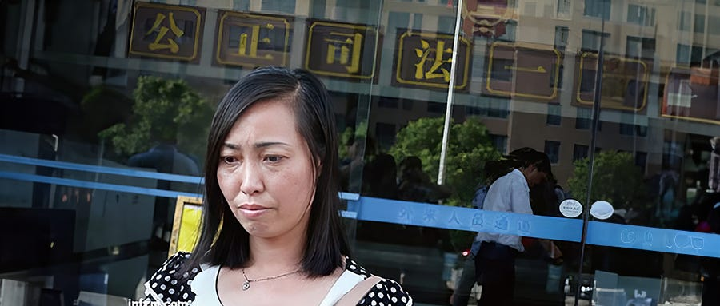
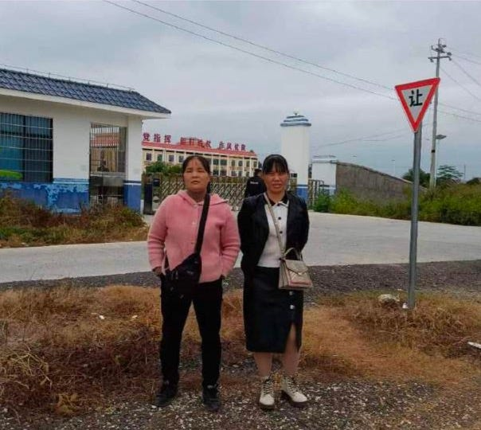
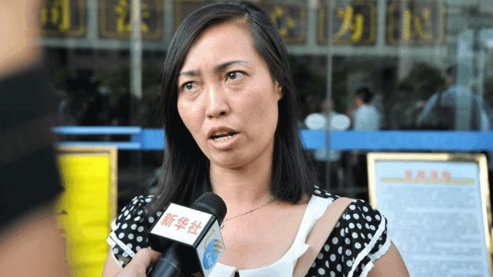
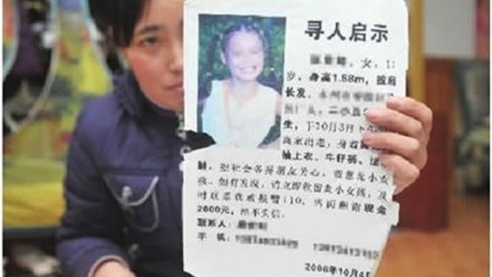
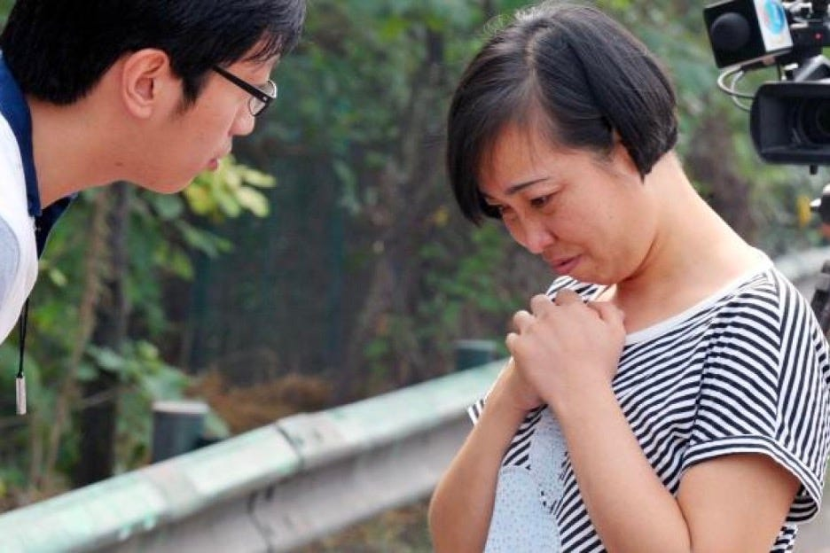
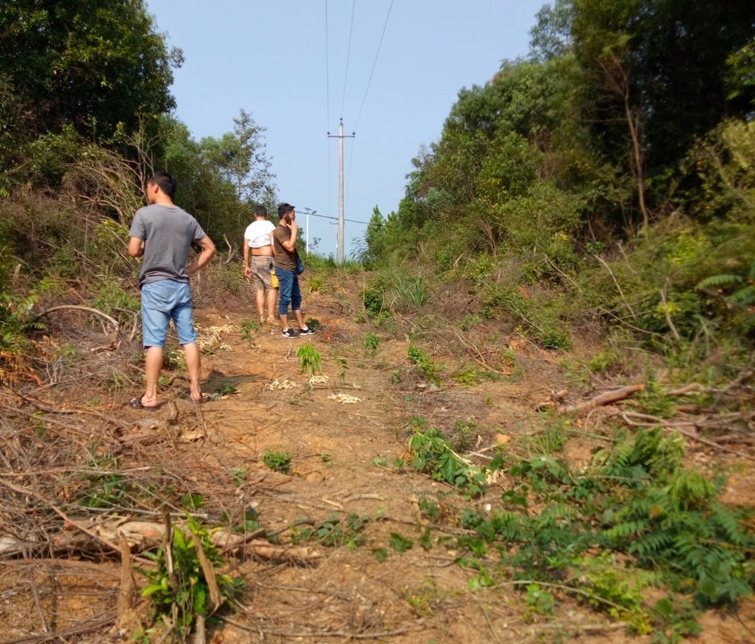
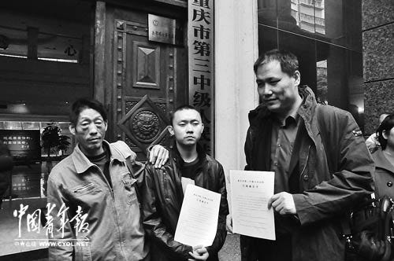
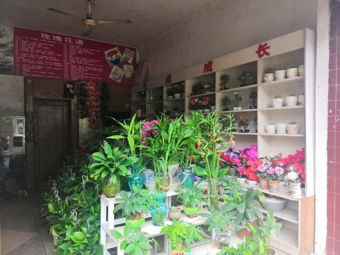
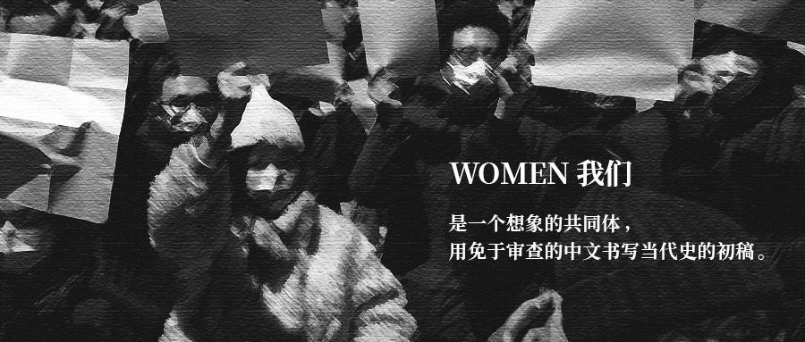

“寻衅滋事者”唐慧 - WOMEN我们
Table of Contents
因为年幼的女儿被“嫖宿”，她走上了上访维权的不归路；因为维权被劳教，她成为公众视野中最知名的劳教受害者；因为认定要“追求公平正义”，她再次锒铛入狱。“寻衅滋事者”唐慧，见证了十年间舆论与司法的激烈变化。
Jan 28, 2024

撰文 原野
编辑 雪山 August
平台编辑 覃山
2023年国庆假期后的第二个工作日，隔着厚厚的玻璃和防护网，文春霞两年来第一次见到丈夫唐世科和小姑子唐慧。她不是在法庭，而是在湖南永州道县看守所会见室的门口，旁听对他们的宣判。

Figure 1: 文春霞（左）和妹妹在看守所前/朱孝顶微博
代理律师朱孝顶用了两个“史无前例”形容道县法院的行为。“这是史无前例的违法。”按照法律规定，宣判应当开庭并公开进行。“法院竟然选择在办案单位或律师会见室里宣判，这是史无前例的‘创举'。”
朱孝顶说，前一天中午他才收到法院书记员的短信，通知第二天宣判。时间太紧，他和徐利平、任建宇两位辩护律师没能出庭。法院一开始并不想让家属来旁听，经他们抗议后，文春霞和妹妹才得以进入。
从永州的零陵城区到道县得坐两个多小时的县城大巴，文春霞晕车，难受了一路。当天正是寒露，她穿上了长衣长裤抵御深秋的凉气。进到看守所，存完包等来了两个女工作人员，“一个穿了警服，一个没有”，把她们带去卫生间，要求她们脱衣，检查内衣内裤，甚至鞋子也要脱掉。
六七平米的会见室里站了法官、书记员、警察和唐慧兄妹后，“再进去一个人，连转身都转不了”。文春霞从红色塑料凳上站起来，和录音录像的人，一左一右守在门口，听到了判决-–—因寻衅滋事罪，唐慧被判四年，唐世科被判三年半。
唐慧这个名字，在很长一段时间里，总和“嫖宿幼女”、“维权”、“上访”、“劳教”缠绕在一起。2006年，她时年11岁的女儿失踪，之后被发现被“嫖宿”，司法体系的不作为让她走上上访之路；因为上访维权，她被处以劳教，成为劳教制度废除之前最知名的受害者。尘埃落定后，劳教这一不经法庭审判即可剥夺 自由的制度被废除，她却又重新因上访而锒铛入狱。

Figure 2: 2013年7月2日，唐慧在法院外接受媒体采访/新华社
这从一开始就是一条不归路。陪她上访过的母亲已经离世，十七年前留下的病痛还在折磨着她的女儿，如今母女分隔两地，相距千里，而二哥也与她一起被控寻衅滋事。家人不理解她的倔强。被丈夫张杰多次劝说后，她选择了离婚。大哥唐世宏觉得“这个社会没有绝对的公平”，但唐慧不一样，“她必须要搞一个水落石出”。
起点：“我孩子不是自愿的”
唐慧走上上访道路是一个逐步升级的过程。2006年10月1日，唐慧当时还不到11岁的女儿乐乐，在永州家附近的旱冰场玩耍，被23岁的周军辉诱骗到出租屋，多次强行发生了性关系。两天后，周将她送去了案犯秦星和陈刚经营的卖淫场所“柳情缘休闲屋”。
三个月内，乐乐被迫卖淫上百次，还被4人接出饮酒并被采取暴力手段轮奸。乐乐案代理律师甘元春接受《法治周末》采访时透露，案发后，警方在秦星的一个账本上发现了乐乐接100多名嫖客的记载数据。
据媒体报道，发现乐乐失踪后，唐慧来到派出所报案，但未获立案。她找到区公安局长，拿到批示，警察才开始寻人。
最后，唐家人靠贴寻人启事，得到匿名电话的提示，让亲戚装嫖客，在休闲中心找到了乐乐。唐慧家属打电话叫来刑侦队中队长杨军祥。杨军祥未采取任何行动即离开，最后她拨打了110，由民警解救出乐乐。

Figure 3: 乐乐的寻人启事
对此，杨军祥在接受媒体采访时称，当时“乐乐不愿回家”，而他认为“找到了人，这起离家出走的案子就可以结案了”。不久后，唐慧及家人来到派出所请求录口供并立案调查，唐慧甚至以跳楼相逼，杨军祥同样以“这只是个一般的治安案子”为由拒绝了。
唐慧控告杨军祥渎职，后来他被处以严重警告处分，原因是“没有认真履行职责，其行为构成工作失职错误，造成较坏的社会影响”。据《北京青年报》，纪委报告中未提及杨如何失职，后来杨被内部告知其主要过错是“没有用警车将唐慧送回家”。
每一次的正常报案都无法推动警方积极作为，基层的办案方式也不断刺激着唐慧。立案后，警方迟迟不见其他行动。杨军祥对媒体解释称，当时只有乐乐的单方面陈述，并没有“柳情缘”容留卖淫的证据，所以未立即对秦星等人采取强制措施，直到后来蹲守到“现行”才刑拘了秦星。
秦星以“乐乐并未失去人身自由”为由，称乐乐是自愿的，周军辉则声称，乐乐是自愿将卖淫所得给他的。司法系统接受了这个说法。案发后，一名警察曾当着乐乐父亲的面，说乐乐看起来不像11岁的。检察院指派的公诉人也对唐慧说，“没看出来你女儿是被强迫的，看上去不只有11岁”。高院主审法官告诉唐慧，“你没管 好你的女儿，你女儿在外面混的”。
唐慧不能接受。她对《澎湃新闻》说，女儿刚出事时，她也曾犹豫过，觉得公开对孩子名声不好。“但他们一直说我孩子是自愿的，*那段时间，我整天以泪洗面，唯一的动力就是告诉他们，我孩子不是自愿的。”*
上访是有效的，而且似乎只有上访，才能解决问题。2007年2月14日，时任湖南省公安厅治安总队长接到唐慧反映女儿案情的来信后，批示永州方面要“高度重视，依法惩处”；2月28日，经唐慧“跪见”，当时新上任的永州市公安局局长刘建宽批示要“务必严惩彻查，并追究民警办案不力的责任”。
尽管案件终于进入正轨，上百名嫖客里最终只有几名被追究责任。
唐慧不再信任地方公检法，行为一再升级。等到案子终于开审，唐慧执意要求判所有被告人死刑。这种民间的朴素报应心理，显然不符合现代司法的比例原则，在中国政府向国际社会承诺减少死刑的背景之下，是不可能被满足的要求。
她不屈不挠地闹，最终案子二审之后，又被省高院发回重审。
2010年6月1日，永州市零陵法院发生枪击案，造成三名法官死亡，多人受伤，此案震惊全国，引来大批媒体关注。自力维权4年的唐慧抓住了机会。她谎称枪手是乐乐干爹，杀人是为乐乐伸张正义。铤而走险的虚构帮助她与媒体建立了联系，也影响了判决，重审结果导致部分犯罪嫌疑人刑罚加重。

Figure 4: 唐慧被释放后接受媒体采访/新华社
但唐慧始终没有得到她想要的死刑，她一再到省市司法机关上访。2012年，永州市公安局零陵分局宣告对其处以劳教一年半。女儿被性侵的“上访妈妈”被劳教，一时间吸引了众多媒体关注。劳教决定七天后被撤销，此后的一年间，她将劳教委诉上法庭，拒绝了劳教委10万“生活补助款”的私了，理由是“不想在黑暗中拿 钱”。最终，她得到了2941元的国家赔偿。
媒体给唐慧母女带来支持，也带来了伤害。作为“案中案”的劳教案引发关注之后，《民主与法治》 杂志社记者廖隆章在其微博上发表题为《乐乐卖淫案真相之一：带着脑子看清公知们的嘴脸》的长微博，指出乐乐是“自愿卖淫”。他引用了显然来自案件卷宗的证据，却声称是自己“捡来的”。而《南方周末》记者柴会群也在事后的报道中指出，乐乐卖淫为“自愿”，缺乏强迫证据。
今天的人们也许很难想象，十年之前，一个11岁少女会被一群成年男性在媒体上公开审判，她是否是自愿卖淫。 在女权倡导者和法学者多年推动之下，2015年，嫖宿幼女罪终于在刑法修正案（九）中走入历史。这意味着法律认定所有十四岁以下的少女都不具备性同意权，与其发生性关系一律认定为强奸。所谓未成年人自愿卖淫，组织者不存在强迫之类的说法，都属于一个对儿童与女性人身权利认识不足的时代。
Figure 5: 唐慧前夫张杰展示乐乐案先后四次的判决书/新华社
2014年，最高人民法院裁定不核准周军辉、秦星死刑之后，湖南省高级人民法院进行对周军辉、秦星二审重审的公开宣判，两人被改判无期。这不是唐慧满意的结果，但她还是开了家花店，重新做起小生意，回归正常生活。
十年后为兄上访
2021年10月，唐慧在北京街头被押送回道县。这是她时隔十多年后再一次来到北京上访。据《新京报》统计，她为了女儿乐乐被强迫卖淫一事，6年间进京23次，赴省城百余次。
唐慧的再次上访让许多关心她的记者、律师都无法理解。她给一位相识多年的律师的解释是，二哥唐世科多年来为赡养母亲付出了很多，她心有愧疚，而二哥自留山上的野生樟树被供电公司以清障为由非法砍伐，此事一直没有得到公正处理，她想帮哥哥一把。
2021年8月21日，唐世科在“问政湖南”发帖，举报清障小组组长、镇长张仁和违法失职。属地富家桥镇政府回复称不存在违法失职情况，但承认行动中“未办理林木砍伐等相关手续，毁坏了国家二级保护植物香樟”，且“区森林公安分局已对有关责任人采取强制措施，目前该案件已进入区法院诉讼阶段”。
朱孝顶确认了这一点，并表示零陵区检察院曾以公诉机关名义认定唐世科为被害人。而2021年9月7日，国家林业和草原局宣布将香樟剔除出《国家重点保护野生植物名录》，砍伐香樟不再构成犯罪。检察院撤诉后，唐世科被害人身份也不再成立。

Figure 6: 清障小组砍伐的樟树/唐世科微博
判决书中提到，唐慧兄妹向供电公司索赔，金额从3万元渐次提高到50万元。对此，朱孝顶称索赔一事不属实，是供电公司主动找唐世科协商赔偿。至于唐慧兄妹向法院起诉要求赔偿三百多万，朱孝顶认为公民通过诉讼主张权利并无不妥，“法院依照法律该支持多少就是多少”，而唐慧兄妹至今未收到一分钱赔偿。
朱孝顶和徐利平在辩护书中指出，77名永州各区县警察组成了专案组，收集调查了自2010年以来唐家兄妹的“劣迹”，最后在起诉书中却只能提出三起所谓“犯罪事实”，除了因樟树起诉供电公司之外，还有两起医疗事故维权：2010年宫外孕误诊导致唐慧终身不孕；2017年唐慧的母亲在医院住院期间发生碱中毒，在医院抽搐六七个小时，没有医生及时救治。
两位律师称，在这三起案件中，“唐慧及其家人均是毫无争议的受害人，且受害程度还十分严重，除了第一起导致唐慧终身不孕的事件医院赔偿了6万元以外，另外两起事件，唐慧和唐世科未获得任何赔偿。”
他们也指出，在整个侦查与审查起诉阶段，唐家兄妹的合法权利并未得到保障，从无法会见律师，到律师迟迟无法阅卷，且律师还曾遭受“有组织、有协同、有分工的持续跟踪”。
唐慧被指控“寻衅滋事”的另一桩案件“宫外孕案”发生在2010年。此时唐慧正为乐乐的案子奔走。据《澎湃新闻》，由于四医院误诊，导致唐慧被切除右侧输卵管，永久失去生育能力，一度心灰意冷不想再去上访。
起诉书指控，2010年7月至2012年3月，唐慧通过恶意举报、辱骂、威胁四医院工作人员和赴省进京非法上访等方式给医院施压，以四医院“误诊”为由上访，并采取横冲马路、溜走失联等方式给当地镇政府接访人员施压。
唐慧在一份手写控告书中否认了此事，称她所写的材料都是事实，从来没有恶意举报、威胁医院，2012年10月她去北京是见律师和记者，没有去相关部门上访。
当时，唐慧是当地的上访重点户。信访考评压力下，属地政府不得不对唐慧劝访、陪访，“敏感时期”更加神经紧张。据《重庆青年报》，逢年过节，维稳官员会给唐慧发祝福短信，给她送钱送慰问，让她“有困难找政府”，还帮她解决了低保问题。
唐慧曾告诉《南方人物周刊》，在某个“敏感时期”，她在北京见律师胡益华，当地政府的一帮人员也适时出现，让她回到永州，并承诺帮她解决一次医疗纠纷，给她补偿。
“宫外孕案”中唐慧也得到了6万元赔偿。辩护词称，唐慧当庭陈述，零陵公安局副局长周滔主动出面劝说，她才收下了6万元赔偿款。而起诉书对这6万元的描述是，“四医院被迫答应拿出6万元‘医疗赔偿款'，以支付扶贫资金的名义通过富家桥政府转交给唐慧”。
“一生的努力都归回来了”
唐慧后来在手写自述中提到，2021年带队把她从北京押送回道县的女警，也是2012年押送她去劳教的。劳教制度最早在上世纪50年代被用于肃清反革命分子，文革期间被认为是“资敌、养敌的工具”而一度停止，直到1975年应维护治安的急迫需要而恢复。
以息访为目的，劳教和送钱都参与组成了庞大的维稳机器。看似坚如磐石的机器也曾因唐慧而松动些许。“上访妈妈”被劳教一事在头版头条被长篇累牍地报道，各大媒体将专家们请到镜头下讨论劳教制度，废止劳教的呼声越来越高。在公众舆论和各种因素影响下， 2013年12月28日，劳教制度被正式废止。
这并非一时一事之功。在唐慧之前，大学生村官任建宇被劳教案也引发了持久关注。任建宇因转发100多条涉政微博被控“煽动颠覆国家罪”-–—他批评当时的重庆市委书记薄熙来搞“二次文革”。他被关一年后，重庆劳教委以“处理不当”为由，撤销劳教决定。
走出劳教所后，任建宇最终没能恢复公务员身份，找工作也因被劳教的经历四处碰壁。13000元的国家赔偿平均到每天仅有28.26元，这是自由的价格。而一年多后，也就是2014年5月，任建宇的代理律师浦志强因“寻衅滋事”被捕。一个维稳新阶段拉开序幕。

Figure 7: 宣判后的任建宇(中)及父亲（左）、代理律师浦志强/中青报
任建宇对劳教的恐惧再次被唤醒。也许只有自己学法才能更好地保护自己。他着手开始准备司法考试，第二次以415分的高分通过，成为了一名律师。现在他是唐世科的辩护律师。
在唐慧被劳教案代理律师斯伟江看来，废止劳教遇到的最大阻力来自公安。劳教作为一种社会管控手段，无需经过法院审判，公安授意劳教委敲个章就可以剥夺公民人身自由，“非常好用”。 劳教逐渐变为羁押访民和打压言论自由的工具。
劳教废止后，“寻衅滋事”、“冲击国家机关”、“扰乱公共秩序”等罪状填补了留下的管理空白，“不够的话各个省还有自己的司法解释。”迟夙生说。这位前全国人大代表曾积极推动劳教废止。
三大口袋罪之首的寻衅滋事罪也同样好用。朱孝顶表示，虽然寻衅滋事罪需要经过法院和检察院、层层审理才能做出判决，但“枉法裁判成本不高的情况下，很多案件就这么圆下去了”。“以前是公安一家，现在是公检法一起协同作战。”斯伟江解释。
这意味着司法成为了公安的傀儡。朱孝顶透露，办理唐慧兄妹寻衅滋事案时，道县法院庭长刘昊鹏曾明确表示，对于辩护人阅卷、会见等问题，他们要请示公安的专案组。法院还驳回了律师申请调取证据、排除非法证据、申请通知证人出庭等所有申请。
更重要的是，劳教是行政行为，寻衅滋事罪是刑事罪名，会留下案底。文春霞介绍，丈夫唐世科被抓时，小女儿文慧还在读小学。学校里的老师被政府的人找过，也知道她家里的事。升进初中的一次考试，文慧考了全校第一，在家大哭。她对文春霞说，本来她的志向是考清华北大，她的强项是文科，爸爸要是坐了牢，以后她政审 通不过，就必须要放弃文科了。
“好不容易把劳教打下来了，它一变，又改成了寻衅滋事，比原来还严重。”做了44年律师的迟夙生觉得“一生的努力都归回来了”。
刑事案件能不能公正主要靠程序。“现实是现在律师都变成‘信访户'了，要为法庭里的违法给各个部门写材料反映。”迟夙生说。（注：2023年11月6日，迟夙生在云南宣威办理案件时，审判长在法警眼皮底下偷走她的手机。她欲查询手机去向却遭法警强行拖走，被气得突发心脏疾病紧急送医。此事被曝光后舆论哗然。）遇到法庭违法，律师在庭外发言还可能被认为是“炒作案件”，会被投诉到司法局。
“访民都有个包青天情结，可这个情结谁给他们呢？”斯伟江也劝过唐慧，“十年前可能时代正好允许她这些事情发生，她也成功了，十年后她还想再拷贝这种方式，但是时代已经完全不一样了。”
看守所外：创痛没有结束
唐世科上访被抓后，当地怕文春霞也去上访，对她进行了长达一个月的24小时看管。有时候是4个人，有时候是6个人，文春霞回家睡觉，这些人就在楼下守着。
文春霞以前在一个电商平台上班，被24小时看管后怕影响别人，便辞了工。她现在看着唐慧的花店。丈夫走后，这是整个家庭唯一的收入来源。

Figure 8: 唐慧的花店/澎湃新闻
乐乐被解救出来后，经医生诊断，患上了严重的创伤后应激障碍和难以治愈的性病。“乐乐变得极端和易怒，”文春霞回忆，“情绪变化很快，上一秒还在笑，下一秒一下子就变了。”
唐慧被抓后，乐乐的发病更频繁了。“有时候两个月发一次病，有时候一个月不到就发病。”她还和文春霞表露过自杀倾向，“她说我回去从检察院的楼上跳下来死掉算了。”而性病发作时，“身体里像有很多的蚂蚁虫子在咬”。
Figure 9: 乐乐朋友圈截图/家属供
唐慧给乐乐贷款买了一套房，自己也在永州按揭了一处居所，被抓后房子断贷了。文春霞说，乐乐现在打两份工还自己和妈妈的房贷。
文春霞的时间跟着孩子走。她早上七点多就来了花店，晚上八点多去接下了晚自习的女儿回家。周末一般六点半就回家了，女儿一个人在家里，她不放心。
唐慧在看守所里对文春霞说的最后一句话是，照顾好乐乐。
文春霞只能看到唐慧的头部和肩部，她觉得唐慧老了很多，头上生出了一片一片的白发。在27页的自述里，唐慧详细记录了指定监视居住六个月里被刑讯逼供的经历。在法庭上朗读时，律师注意到旁听席上一名家属痛哭出声。
“我就希望他们平平安安地回家来，别的我不想，想也没有用。”文春霞说。
10月11日，在三位律师的催促下，道县法院派人到机场送达了判决书。12日，律师顺利在看守所会见唐慧兄妹，正式向法院提交了上诉状，11月中旬二审立案。而直到2024年1月17日，自一审宣判过去了100天之后，律师未收到法院任何关于开庭或维持原判的通知。
任建宇预测年前不会开庭，唐慧将在看守所度过第三个春节。她在自述中写道，指定监视居住结束后，她和哥哥被押送到拘留所隔离，哥哥对她说，别哭，要相信法律。
（为保护受访者亲属隐私，乐乐、文慧为化名）
